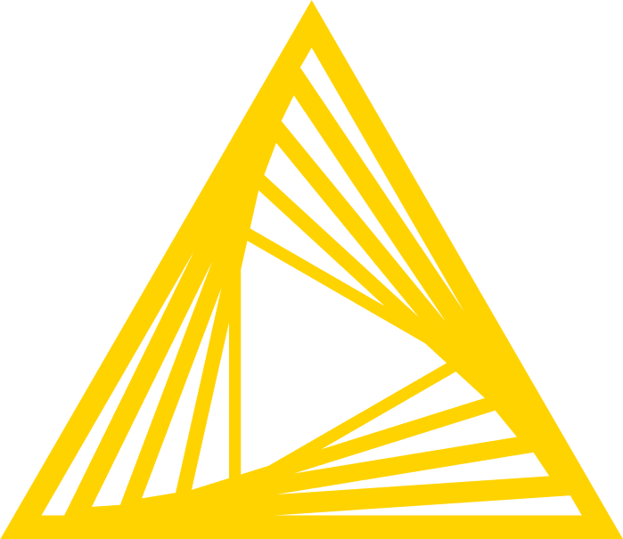

FORMATION SUP DE VINCI MASTER I BIG DATA 2026-2027
Module ETL
Concevoir, documenter, optimiser et sécuriser des processus ETL fiables, maintenables et adaptés au cycle de vie des données.
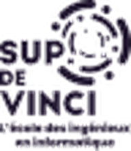
Franck ORAGA
Consultant Senior Data Platform
1 · Introduction
Votre intervenant
Franck ORAGA
Consultant Senior Data Platform chez Data Expertise · Data, Cloud, IA
Je conçois et j'industrialise des plateformes de données, et je construis des agents IA qui automatisent les tâches métier.
Solina
client actuel
Certifications Microsoft
Ils m'ont fait confiance
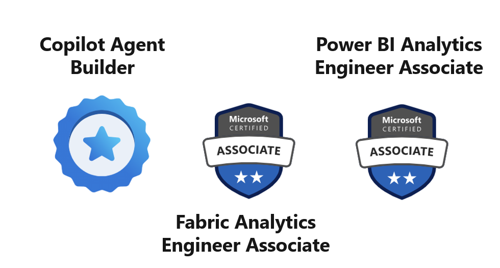
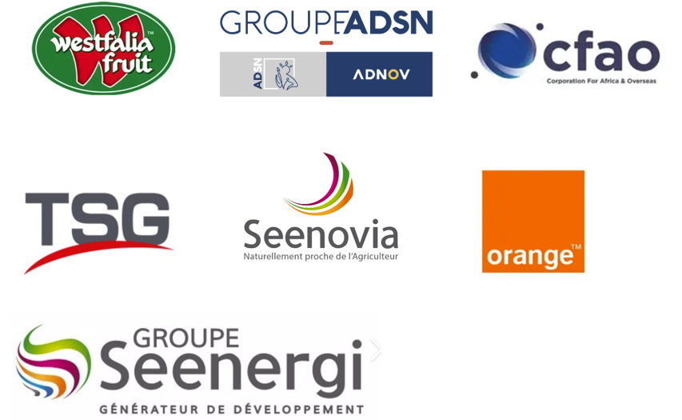
Franck ORAGA · Consultant Senior Data Platform
2 / 80
1 · Introduction
Faisons connaissance
Tour de table · 1 min chacun
1
Votre prénom et votre parcours
2
Votre expérience de la donnée : Excel, SQL, un outil ETL ?
3
Ce que vous attendez de ces sept jours
Franck ORAGA · Consultant Senior Data Platform
3 / 80
2 · Objectifs pédagogiques
À la fin du module, vous saurez…
1
Maîtriser la conception et l'optimisation des processus ETL et ELT pour gérer la scalabilité des architectures de stockage.
2
Extraire des données depuis des sources hétérogènes et assurer leur transformation (nettoyage, enrichissement) pour les rendre exploitables.
3
Réaliser la collecte automatisée de données via des API avancées (OAuth, rate limits).
4
Garantir la qualité et l'intégrité des données via des tests automatisés et des mécanismes de réconciliation.
5
Industrialiser les workflows ETL via des outils d'orchestration pour automatiser les traitements.
6
Documenter et superviser des pipelines de traitement fiables et reproductibles.
Franck ORAGA · Consultant Senior Data Platform
4 / 80
2 · Organisation
49 heures, réparties sur 7 jours
49 h
7 jours de 7 heures
4 + 2
évaluations et labs notés
1
projet final en binôme
Chaque jour
09:00 – 12:30 · pause de 10:45 à 11:00
13:30 – 17:00 · pause de 15:15 à 15:30
Vos outils
KNIME 5.x · Neon (PostgreSQL) · Docker Desktop · Apache Airflow 2.9.3
À prévoir avant le jour 1 : un ordinateur avec droits administrateur et 8 Go de mémoire, et un compte Neon gratuit.
Franck ORAGA · Consultant Senior Data Platform
5 / 80
2 · Évaluations
Sept notes pour faire 100 %
Projet : 25 %
| Épreuve | Format | Durée | Jour | Poids |
|---|---|---|---|---|
| Lab 1 · Kerivane (partie notée) | Individuel, KNIME | 12 h de lab | J1 – J2 | 3 % |
| Évaluation 1 · notions ETL | Individuel, sur papier | 1 h 30 | J3 | 12 % |
| Évaluation 2 · Opération Sablier | Individuel, KNIME + Neon | 3 h | J3 | 20 % |
| Lab 2 · Ardelis (partie notée) | Individuel, Airflow | 7 h de lab | J4 | 5 % |
| Évaluation 3 · Airflow | Individuel, sur papier | 1 h | J5 | 10 % |
| Évaluation 4 · Observatoire Kinetica | Individuel, chaîne complète | 3 h 30 | J5 | 25 % |
| Projet final | Binôme, restitution orale | 2 jours | J6 – J7 | 25 % |
| Quiz ETL · 2 sessions | Individuel, sur téléphone | 2 × 20 min | J3 | Podium |
Le quiz ne compte pas dans la moyenne : il désigne le podium du module. Les épreuves sur ordinateur utilisent vos propres outils et votre propre base Neon.
Franck ORAGA · Consultant Senior Data Platform
6 / 80
3 · Le déroulé
Les sept jours en un coup d'œil
J1
J2
J3
J4
J5
J6
J7
MATIN
Comprendre l'ETL, puis tour de KNIME
MATIN
Lab 1 : missions 5 à 7
MATIN
Quiz ETL 1 et 2, puis Évaluation 1
MATIN
Airflow et Docker, puis Lab 2 : 00 à 05
MATIN
Évaluation 3, puis début de l'Évaluation 4
MATIN
Projet en autonomie
MATIN
Projet, gel des livrables à 12:30
APRÈS-MIDI
Lab 1 : missions 0 à 4
APRÈS-MIDI
Lab 1 : missions 8, 9 et partie notée
APRÈS-MIDI
Évaluation 2, Opération Sablier
APRÈS-MIDI
Lab 2 : 06 à 09 et partie notée
APRÈS-MIDI
Fin de l'Éval. 4, sujets du projet, binômes
APRÈS-MIDI
Projet, point d'étape à 16:00
APRÈS-MIDI
Restitutions et bilan du module
Bleu : cours et labs · Orange : évaluations · Violet : projet final
Franck ORAGA · Consultant Senior Data Platform
7 / 80
3 · Jour 1
Comprendre l'ETL, puis construire avec KNIME
Matin · contexte et généralités
09:00 Introduction, tour de table
09:30 Objectifs, organisation, évaluations
10:00 Comprendre l'ETL, les types de données, le défi
11:00 L'architecture ETL, le panorama des solutions
11:45 Focus KNIME : le tour du propriétaire
Après-midi · Lab 1 Kerivane
Mission 0 Préparer l'environnement
Mission 1 Extraire les trois sources
Mission 2 Nettoyer les biens
Mission 3 Préparer agents et ventes, déposer en staging
Mission 4 Croiser les sources et calculer
Objectif de la journée : le workflow 01 dépose trois tables propres dans la zone de transit de votre base Neon.
Franck ORAGA · Consultant Senior Data Platform
8 / 80

Jour 1 · Matin · Contexte et généralités
Comprendre l'ETL
Pourquoi automatiser la chaîne de la donnée, comment elle s'organise et avec quels outils.
Contexte historique
L'ETL
Les outils
Franck ORAGA
Consultant Senior Data Platform
9 / 80
Comprendre l'ETL · Contexte historique
Le numérique fait exploser le volume de données
En 2002, le stockage numérique dépasse l'analogique : c'est le début de l'ère numérique. Il permet de :
1
Automatiser la récupération et le stockage de l'information.
2
Faciliter les analyses sur l'information.
3
Transmettre l'information, partout et vite.
Capacité mondiale de stockage en 2007
276,12
milliards de Go numériques (94 %)
18,86
milliards de Go analogiques (6 %)
Part du numérique : 1 % en 1986, 3 % en 1993, 25 % en 2000, 94 % en 2007.
Répartition du stockage numérique, 2007
Disques durs de PC
44,5 %
DVD et Blu-ray
22,8 %
Bande numérique
11,8 %
Serveurs et mainframes
8,9 %
CD et minidisques
6,8 %
Disques durs portables
2,4 %
Lecteurs portables, clés USB
~2,0 %
Autres supports numériques
0,8 %
Source : M. Hilbert et P. López, Science, 2011.
Franck ORAGA · Consultant Senior Data Platform
10 / 80
Comprendre l'ETL · Contexte historique
Des données de toute nature
Structurées
Définition
Format fixe et organisé, en lignes et en colonnes. Chaque champ respecte un type précis.
Exemples
Table SQL, fichier Excel, ERP
Stockage
Base de données SQL
Semi-structurées
Définition
Pas de tableau, mais une structure interne grâce à des balises ou des clés.
Exemples
JSON d'API, XML, logs applicatifs
{ "client": { "nom": "Alice", "age": 30 } }
Stockage
NoSQL, data lake
Non structurées
Définition
Aucune organisation prédéfinie : contenus libres, difficiles à indexer automatiquement.
Exemples
Vidéos, e-mails, photos, audio, fichiers PDF, docx, txt
Stockage
Data lake
Chaque type de donnée exige un traitement et un stockage adaptés.
Franck ORAGA · Consultant Senior Data Platform
11 / 80
Comprendre l'ETL · Contexte historique
Structurée, semi-structurée ou non structurée ?
À vous · 10 min
En binôme, classez ces douze données dans les trois familles, puis proposez un stockage pour chacune.
1
Une table clients dans PostgreSQL
2
Un fichier Excel de ventes
3
La réponse JSON d'une API météo
4
Un e-mail de réclamation
5
Les logs d'un serveur web
6
La photo d'un ticket de caisse
7
Un export CSV des commandes
8
Un catalogue produits en XML
9
L'enregistrement d'un appel client
10
Un contrat en PDF
11
Les relevés d'un capteur, en JSON
12
Un post sur un réseau social
1
Une table clients dans PostgreSQL
2
Un fichier Excel de ventes
3
La réponse JSON d'une API météo
4
Un e-mail de réclamation *
5
Les logs d'un serveur web
6
La photo d'un ticket de caisse
7
Un export CSV des commandes
8
Un catalogue produits en XML
9
L'enregistrement d'un appel client
10
Un contrat en PDF
11
Les relevés d'un capteur, en JSON
12
Un post sur un réseau social *
Structurées · base SQL
Semi-structurées · NoSQL, data lake
Non structurées · data lake
* cas discutables
Franck ORAGA · Consultant Senior Data Platform
12 / 80
Comprendre l'ETL · Contexte historique
Collecter, transformer, stocker : comment automatiser ?
Données brutes
Connaissance →
Sources
ERP, CRM, web, capteurs, Excel
→
Collecte
API et flux planifiés
→
Transformation
Nettoyage, règles métier
→
Stockage
Entrepôt unique et historisé
→
Pilotage
Tableaux de bord, alertes
Orchestration automatique
Planification · reprise sur erreur · journalisation · contrôle qualité
Le défi
Face à des données toujours plus massives, comment automatiser leur collecte, leur transformation et leur stockage pour mieux piloter l'activité ?
Franck ORAGA · Consultant Senior Data Platform
13 / 80
Comprendre l'ETL · L'ETL
L'ETL : la réponse au défi d'orchestration
Le défi trouve sa réponse : automatiser la chaîne de la donnée avec l'ETL.
ETL = Extract, Transform, Load. Un procédé automatisé qui extrait les données de sources hétérogènes, les transforme, puis les charge dans un entrepôt de données.
Étape « Collecte »
E
Extract : extraire
Récupérer automatiquement les données des sources : ERP, CRM, API, fichiers.
→
Étape « Transformation »
T
Transform : transformer
Nettoyer, contrôler la qualité, appliquer les règles métier, enrichir.
→
Étape « Stockage »
L
Load : charger
Stocker les données prêtes à l'emploi dans l'entrepôt, historisées.
Franck ORAGA · Consultant Senior Data Platform
14 / 80
Comprendre l'ETL · L'ETL
Architecture type d'un projet ETL
Sources
Chaîne ETL automatisée
Stockage
Restitution
ERP
commandes, stocks
CRM
clients
Fichiers plats
CSV, Excel
API, web
JSON, logs
→
E · Extract
Connecteurs, API, fichiers
→
T · Transform
Nettoyage, règles métier
→
L · Load
Chargement dans l'entrepôt
Staging : la zone de transit
les données brutes, conservées avant traitement
→
Entrepôt de données
historisé, source unique de vérité
→
Data marts
ventes, finance, RH
Restitution
tableaux de bord, alertes, KPI
Orchestration : planification des jobs, dépendances, reprise sur erreur (ex. Airflow, Control-M)
Transversal : supervision · journalisation · sécurité · catalogue de métadonnées
Franck ORAGA · Consultant Senior Data Platform
15 / 80
Comprendre l'ETL · Les outils
Panorama des outils ETL
Encadré orange : dans chaque catégorie, l'outil que ce module aurait pu traiter. KNIME est celui que nous utilisons.
Franck ORAGA · Consultant Senior Data Platform
16 / 80
Comprendre l'ETL · Les outils
Synthèse : quel outil pour quel projet ?
Pas d'outil universel : le choix dépend du volume, des compétences, de l'écosystème et du budget. Les outils se combinent souvent (ex. Airflow orchestre, dbt transforme).
Franck ORAGA · Consultant Senior Data Platform
17 / 80
Jour 1 · Matin · Focus KNIME Analytics Platform 5
Le tour du propriétaire
De l'installation à l'export : découvrir chaque élément de l'interface en le manipulant.
Franck ORAGA
Consultant Senior Data Platform
18 / 80
Tour de KNIME · Le plan
Six étapes pour prendre KNIME en main
1
Découvrir KNIME
Définition, atouts, prix.
2
Installer
Télécharger et lancer.
3
La page d'accueil
Ranger et créer.
4
L'espace de travail
Barres et panneaux.
5
Le nœud
Lire un CSV de A à Z.
6
Sauvegarder et exporter
Partager un workflow.
On ne regarde pas, on fait : chaque pastille À VOUS = une manipulation. Le reste, dans le Lab.
Franck ORAGA · Consultant Senior Data Platform
19 / 80
Tour de KNIME · 1 · Découvrir KNIME
Qu'est-ce que KNIME ?
KNIME
KNIME Analytics Platform est un logiciel gratuit et open source pour préparer, analyser et visualiser des données sans écrire de code.
Le nœud
Une brique qui fait une seule chose : lire un fichier, filtrer, joindre, calculer, écrire…
Le workflow
Des nœuds reliés entre eux : les données circulent de gauche à droite.
KNIME = Konstanz Information Miner, né à l'université de Constance (Allemagne).
Franck ORAGA · Consultant Senior Data Platform
20 / 80
Tour de KNIME · 1 · Découvrir KNIME
Pourquoi KNIME séduit de plus en plus
Gratuit, sans limite
Visuel, sans code
Ouvert à tout
De l'ETL à l'IA
Reproductible
Une grande communauté
Côté marché : le manque de profils techniques pousse les entreprises vers le low-code.
Franck ORAGA · Consultant Senior Data Platform
21 / 80
Tour de KNIME · 1 · Découvrir KNIME
Combien ça coûte ?
Construire est gratuit.
On ne paie que pour automatiser, partager et déployer en ligne.
Toute la formation se fait avec la version gratuite. Tarifs relevés sur knime.com en octobre 2026.
Franck ORAGA · Consultant Senior Data Platform
22 / 80
Tour de KNIME · 2 · Installer
Télécharger et installer KNIME
À vous
1
Ouvrez knime.com/downloads et choisissez votre système.
2
Lancez l'installeur (.exe, .dmg ou archive Linux).
3
Une version 4 est déjà là ? Installez la 5 à côté.
Franck ORAGA · Consultant Senior Data Platform
23 / 80
Tour de KNIME · 2 · Installer
L'installeur, écran par écran
À vous
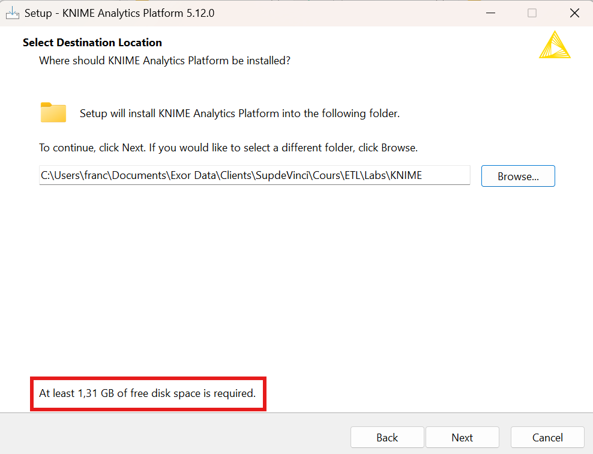
1 · Destination · Gardez le dossier proposé. Prévoir 1,31 Go libres.
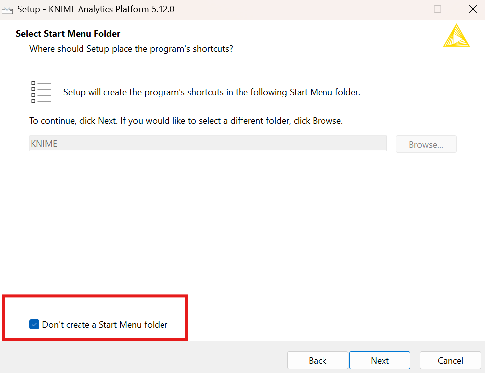
2 · Menu Démarrer · Facultatif : cochez Don't create a Start Menu folder.
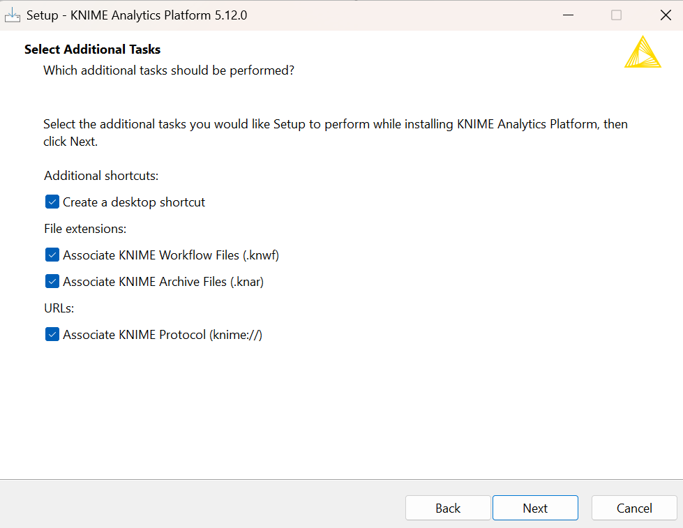
3 · Tâches · Tout cocher : raccourci bureau, fichiers .knwf et .knar.
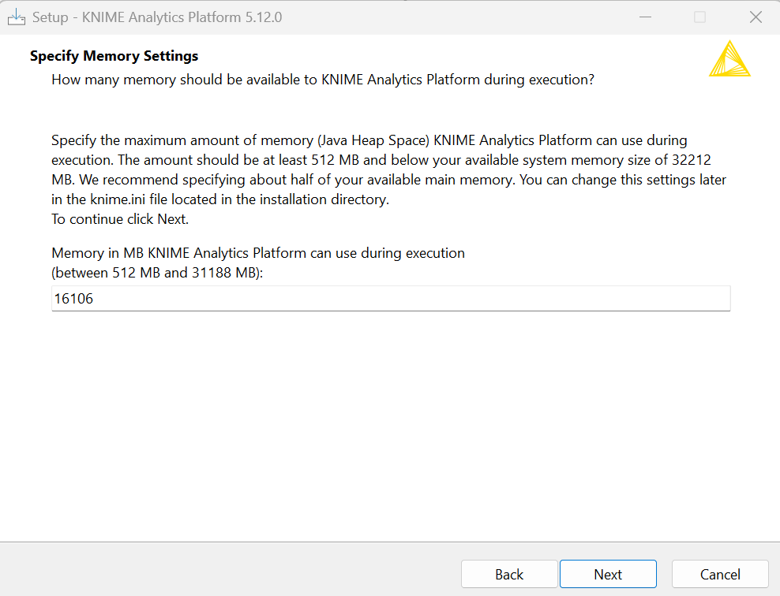
4 · Mémoire · Gardez la valeur proposée : la moitié de votre RAM.
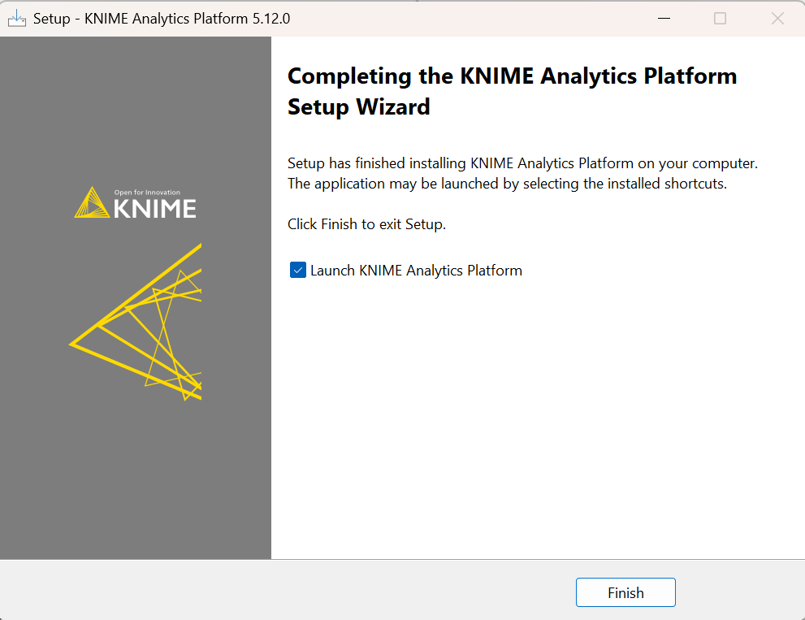
5 · Terminer · Laissez Launch KNIME coché, puis Finish.
Avant : téléchargez l'installeur Windows sur knime.com/downloads, puis Next à chaque écran.
Mémoire : 8 Go de RAM → 4 096 Mo. Modifiable plus tard dans knime.ini.
Franck ORAGA · Consultant Senior Data Platform
24 / 80
Tour de KNIME · 2 · Installer
Premier lancement : le workspace
À vous
Au démarrage, KNIME demande un workspace : le dossier où il range votre travail.
1
Choisissez un dossier simple, par exemple Documents\KNIME\workspace.
2
Cochez Use this as the default pour ne plus avoir la question.
3
Cliquez sur Launch.
Franck ORAGA · Consultant Senior Data Platform
25 / 80
Tour de KNIME · 2 · Installer
Deux interfaces : classique ou moderne
Et chez vous ?
1
Classique (ci-contre)
L'ancienne, pleine de panneaux.
Moderne : celle de la formation
Plus claire. On l'utilise ici.
1
Vous tombez sur l'interface classique ? Cliquez sur Open KNIME Modern UI, en haut à droite.
Franck ORAGA · Consultant Senior Data Platform
26 / 80
Tour de KNIME · 3 · La page d'accueil
La page d'accueil : vous voulez…
À vous
1
2
3
4
1
Revenir ici ? Home.
2
Vos workflows ? Local space.
3
Un exemple ? Cliquez dessus.
4
Partir de zéro ? Create new workflow.
À vous : ouvrez un exemple (3), puis revenez avec Home (1).
Franck ORAGA · Consultant Senior Data Platform
27 / 80
Tour de KNIME · 3 · La page d'accueil
Local space : ranger son travail
À vous · 3 min
1
2
3
4
À vous : créez le dossier Formation_KNIME (1), ouvrez-le d'un double-clic, puis créez-y le workflow Decouverte (4).
1
Créer un dossier ? Create folder.
2
Ouvrir un workflow reçu ? Import workflow.
3
Ajouter des données ? Add files.
4
Créer un workflow ? Le +.
Franck ORAGA · Consultant Senior Data Platform
28 / 80
Tour de KNIME · 4 · L'espace de travail
Un workflow ouvert : vous voulez…
À vous
1
2
3
4
5
1
Changer de workflow ? Son onglet.
2
Enregistrer, exécuter ? La barre d'outils.
3
Ouvrir un panneau ? La barre latérale.
4
Construire ? Le canevas.
5
Zoomer ? En bas à droite.
À vous : Home › Local space › Example Workflows › Basic Examples › ouvrez Building a Simple Classifier. Retrouvez ces 5 zones.
Franck ORAGA · Consultant Senior Data Platform
29 / 80
Tour de KNIME · 4 · La barre latérale · Nodes
Nodes : vous voulez lire un CSV ?
À vous · 2 min
1
2
3
Cliquez sur l'icône Nodes.
1
Trouver un nœud ? Tapez son nom.
2
Parcourir ? Les familles (IO = lire, écrire).
3
L'ajouter ? Glissez-déposez-le.
À vous : dans Decouverte, tapez « csv » (1), glissez-déposez CSV Reader sur le canevas (3).
Franck ORAGA · Consultant Senior Data Platform
30 / 80
Tour de KNIME · 4 · La barre latérale · Nodes
Le « ? » : lire la notice d'un nœud
À vous · 3 min
1
2
3
Un nœud inconnu ? Survolez-le dans Nodes et cliquez sur son ?
1
Ouvrir la notice ? Le ? au survol.
2
Entrées, sorties ? Ports.
3
Les réglages ? Options.
À vous : ouvrez la notice du CSV Reader.
Franck ORAGA · Consultant Senior Data Platform
31 / 80
Tour de KNIME · 4 · La barre latérale · Explorer
Explorer : naviguer sans quitter son workflow
À vous
1
2
3
Ouvrir un autre workflow sans repasser par Home ? Cliquez sur l'icône Explorer.
1
Changer d'espace ? Local ou Hub.
2
Remonter ? Cliquez sur le chemin.
3
Ce qui est ouvert ? Le point gris.
À vous : depuis l'exemple, rouvrez Decouverte par l'Explorer.
Franck ORAGA · Consultant Senior Data Platform
32 / 80
Tour de KNIME · 4 · La barre latérale · K-AI et Monitor
Besoin d'aide ? K-AI et Monitor
À vous
K-AI
Demander comment faire ? Icône K-AI.
Compte Hub requis (gratuit).
Monitor
Trouver ce qui ne va pas ? Icône Monitor : les erreurs du workflow.
À vous : ouvrez K-AI, puis Monitor. Vérifiez toujours ce que propose l'IA.
Franck ORAGA · Consultant Senior Data Platform
33 / 80
Tour de KNIME · 4 · La barre latérale · K-AI
Activer K-AI : un compte Hub gratuit
À vous · 5 min
1 · Créer le compte
knime.com › Sign in › Create your free account
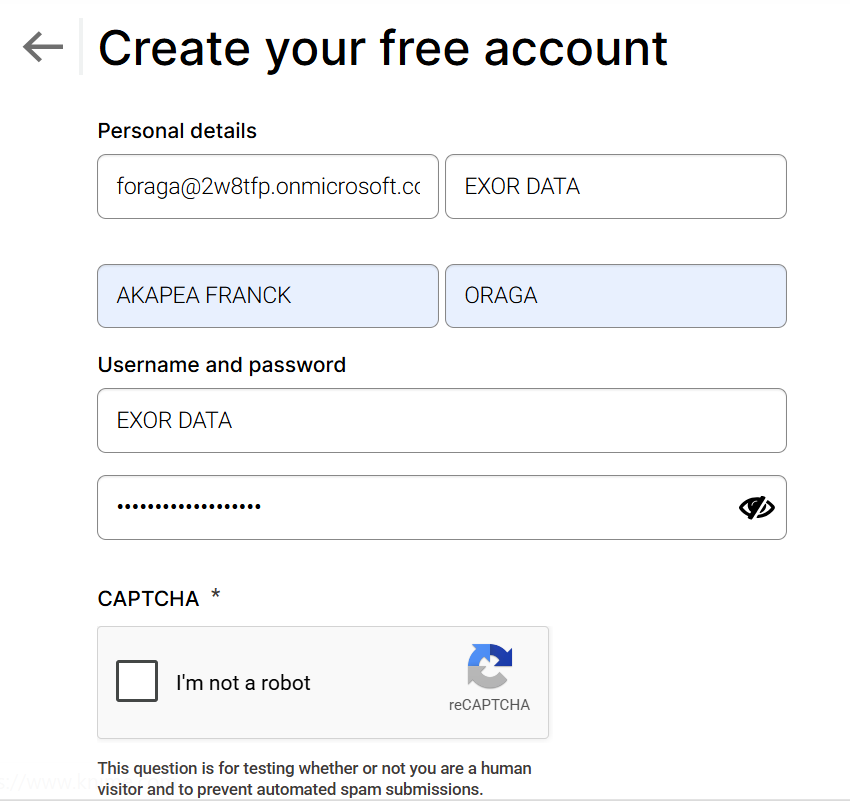
E-mail, prénom, nom, identifiant, mot de passe, captcha.
2 · Confirmer l'e-mail
Cliquez sur le lien reçu de KNIME
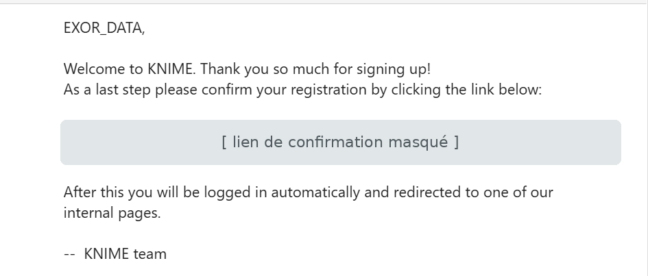
Pas reçu ? Regardez dans les indésirables.
3 · Se connecter dans KNIME
Sign in en haut à droite, puis K-AI
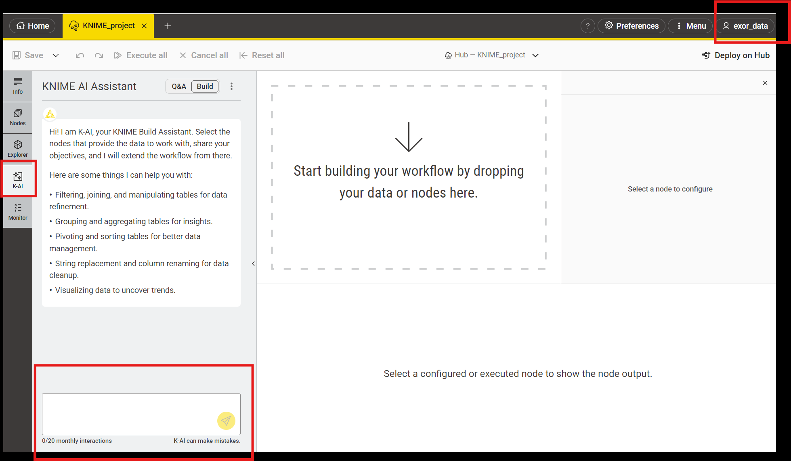
Votre identifiant s'affiche en haut à droite.
Version gratuite : 20 interactions K-AI par mois. Gardez-les pour les vrais blocages. K-AI peut se tromper : vérifiez chaque nœud proposé.
Franck ORAGA · Consultant Senior Data Platform
34 / 80
Tour de KNIME · 4 · En haut à droite
Le Menu : vous voulez…
1
2
3
« ? »
Aide en ligne, guides et raccourcis clavier.
Preferences
Les réglages de KNIME.
Franck ORAGA · Consultant Senior Data Platform
35 / 80
Tour de KNIME · 5 · Le nœud
Observez un nœud sur le canevas
Observez
1
2
3
1
Le nom : sa couleur donne sa famille.
2
Les ports : entrée à gauche, sortie à droite.
3
Le feu : son état.
Franck ORAGA · Consultant Senior Data Platform
36 / 80
Tour de KNIME · 5 · Le nœud
Configurer, exécuter, voir le résultat
Survolez un nœud sur le canevas : des boutons apparaissent.
Voir le résultat ? Sélectionnez le nœud : sa table s'affiche sous le canevas.
La boucle à répéter, à chaque nœud
1
Configurer
↓
2
Exécuter
↓
3
Regarder la sortie
Franck ORAGA · Consultant Senior Data Platform
37 / 80
Tour de KNIME · 5 · Le nœud
À vous : lire un CSV de A à Z
À vous · 10 min
1
Dans Local space › Formation_KNIME, Add files : ajoutez detection_stations_physiques_dott.csv.
2
Dans Decouverte : Nodes › « csv » › glissez-déposez CSV Reader.
3
Double-cliquez dessus et pointez-le sur le fichier.
4
Fichier français : réglez séparateur et décimale (la notice aide).
5
Exécutez, puis sélectionnez le nœud pour voir sa sortie.
Vérifiez
a. De quelle couleur est le feu ?
b. Combien de colonnes compte le fichier ?
c. Quelle colonne contient les pays ?
Franck ORAGA · Consultant Senior Data Platform
38 / 80
Tour de KNIME · 6 · Sauvegarder et exporter
Sauvegarder, exporter, importer
À vous · 2 min
Sauvegarder ?
Save ou Ctrl+S.
Partager un fichier ?
Clic droit dans l'Explorer › Export. Un workflow donne un .knwf.
Ouvrir celui reçu ?
Local space › Import workflow.
Avant d'envoyer un workflow
Un mot de passe saisi dans un nœud voyage avec le fichier.
Franck ORAGA · Consultant Senior Data Platform
39 / 80
Tour de KNIME · Avant de partir
Cinq questions, cinq secondes chacune
Quiz éclair
1. Où trouver la notice d'un nœud ?
2. Le feu d'un nœud est jaune. Que faire ?
3. Où voir la table produite par un nœud ?
4. Où lister toutes les erreurs du workflow ?
5. Quel fichier envoyer à un collègue ?
Le « ? » au survol, dans le panneau Nodes.
L'exécuter : il est configuré et prêt.
Dans le moniteur de nœud, sous le canevas.
Dans le panneau Monitor de la barre latérale.
Un .knwf, obtenu par Export.
Franck ORAGA · Consultant Senior Data Platform
40 / 80
Tour de KNIME · À retenir
Les trois réflexes du bon utilisateur KNIME
1
Lire la notice (le « ? ») avant de configurer un nœud inconnu.
2
Exécuter nœud par nœud et regarder son feu et sa sortie.
3
Sauvegarder souvent (Ctrl+S) et exporter pour partager.
Vous savez vous repérer dans KNIME. Prochaine étape : le Lab 1, votre premier flux ETL complet.
Franck ORAGA · Consultant Senior Data Platform
41 / 80
Jour 1 · Après-midi · 13:30 – 17:00
À vous : le Lab 1 Kerivane, en autonomie
Autonomie
Cet après-midi : missions 0 à 4
0
Préparer l'environnement : KNIME, base Neon, dossier du Lab
1
Extraire les trois sources
2
Nettoyer les biens
3
Préparer agents et ventes, déposer en staging
4
Croiser les sources et calculer
Objectif de la journée
Le workflow 01 dépose trois tables propres dans la zone de transit de votre base Neon.
Comment travailler
Suivez l'énoncé mission par mission, à votre rythme.
Bloqué ? La notice du nœud, puis votre voisin, puis moi.
Pause de 15:15 à 15:30.
Demain matin : missions 5 à 7. Les missions 8, 9 et la partie notée suivront l'après-midi.
Franck ORAGA · Consultant Senior Data Platform
42 / 80
3 · Jour 2
Finir le Lab 1 Kerivane
Matin · 09:00 – 12:30
Mission 5 Charger l'entrepôt
Mission 6 Charger en incrémental avec DB Merge
Mission 7 Construire les data marts
Après-midi · 13:30 – 17:00
Mission 8 Contrôler la qualité
Mission 9 Automatiser la chaîne
Partie notée du Lab 1 · 3 %
Objectif de la journée : la chaîne complète, des sources aux data marts, contrôlée et rejouable en un clic.
Franck ORAGA · Consultant Senior Data Platform
43 / 80
3 · Jour 3
Prouver ses acquis : quiz et évaluations
Matin · 09:00 – 12:30
09:00 Quiz ETL 1
09:30 Quiz ETL 2 et podium
10:00 Correction et révisions
11:00 Évaluation 1 · 1 h 30 · 12 %
Après-midi · 13:30 – 17:00
13:45 Évaluation 2 · Opération Sablier
3 h sur KNIME et votre base Neon · 20 %
16:45 Remise des livrables
Les deux épreuves sont individuelles : l'Évaluation 1 sur papier, l'Évaluation 2 sur votre poste.
Franck ORAGA · Consultant Senior Data Platform
44 / 80
3 · Jour 4
Orchestrer avec Airflow : le Lab 2 Ardelis
Matin · 09:00 – 12:30
09:00 Airflow et Docker : les notions
09:45 Missions 00 à 05 : installer Docker, lancer Airflow, écrire le premier DAG
Après-midi · 13:30 – 17:00
Missions 06 à 09 : planifier, relancer, contrôler, reprendre
Partie notée du Lab 2 · 5 %
Objectif de la journée : un DAG planifié qui collecte, contrôle et reprend tout seul en cas d'erreur.
Franck ORAGA · Consultant Senior Data Platform
45 / 80
Jour 4 · Airflow et Docker · Pourquoi
Pourquoi KNIME gratuit ne suffit plus
Au Lab 1, vous cliquiez sur Execute all. Mais une source qui publie toutes les heures, qui va cliquer la nuit ?
Airflow est un orchestrateur : il décide quand et dans quel ordre les traitements tournent, et garde l'historique. Gratuit et open source, c'est un standard en entreprise.
Et la version payante ? Les offres payantes de KNIME Hub savent planifier un workflow, sans Airflow. Ici, on travaille avec KNIME Analytics Platform, la version gratuite.
Franck ORAGA · Consultant Senior Data Platform
46 / 80
Jour 4 · Airflow et Docker · Qui fait quoi
Quatre outils, quatre rôles : le restaurant
KNIME
Le cuisinier
Lit, nettoie, charge les données.
Ne décide pas de l'heure du service.
Airflow
Le chef de salle
Envoie les commandes : quand, dans quel ordre, et surveille.
Ne touche pas aux données.
DB
Neon
La chambre froide
Stocke les données, dans PostgreSQL.
Ne transforme rien.
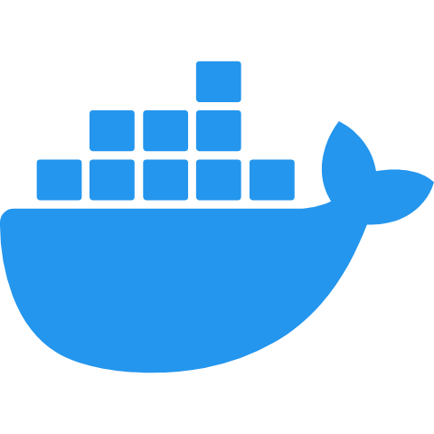
Docker
La cuisine livrée équipée
Fournit Airflow et KNIME tout installés, identiques chez tous.
Ne fait pas d'ETL.
À retenir : chaque outil a une seule responsabilité. Si Airflow transforme des données, quelque chose est mal conçu.
Franck ORAGA · Consultant Senior Data Platform
47 / 80
Jour 4 · Docker · Les notions
Docker en 5 minutes
Docker n'est pas l'objet du module : il nous évite deux heures d'installation, avec un Airflow identique chez tout le monde.
Image
Un modèle prêt à l'emploi : le logiciel et tout ce dont il a besoin.
Airflow avec KNIME déjà installé
Conteneur
Une image en train de tourner, isolée de votre ordinateur.
Votre Airflow, qui fonctionne
Volume
Un dossier de votre PC partagé avec le conteneur.
dags/ et workflows/
docker-compose
La recette qui décrit tout le reste, dans un fichier .yaml.
Fourni dans le Lab 2
Les 3 seules commandes
docker compose up -d # démarrer
docker compose ps # vérifier
docker compose down # arrêter
Mémoire : au moins 6 Go pour Docker, Airflow et KNIME tournent ensemble.
Avant chaque séance : lancez Docker Desktop.
Franck ORAGA · Consultant Senior Data Platform
48 / 80
Jour 4 · Docker · Installation 1/2
Installer Docker et lui donner de la mémoire
Windows
1
Activer WSL2 : PowerShell en administrateur, wsl --install, puis redémarrer
2
Installer Docker Desktop, en laissant « Use WSL 2 » coché
3
Lancer Docker Desktop et attendre que le moteur démarre
macOS
1
Télécharger Docker Desktop pour votre Mac : Apple Silicon ou Intel
2
Installer en glissant l'icône dans Applications
3
Lancer Docker Desktop et attendre que le moteur démarre
Linux
1
Installer Docker Engine selon votre distribution (docs.docker.com)
2
Ajouter votre utilisateur au groupe docker
3
Vérifier que le service tourne
Téléchargement : docker.com/products/docker-desktop · gratuit pour un usage personnel et pédagogique
Au moins 6 Go de mémoire
Airflow et KNIME tournent ensemble : PC à 8 Go → 6 Go pour Docker (fermez le reste) · 16 Go ou plus → 8 Go.
macOS : Settings → Resources → Memory, puis Apply & restart.
Windows : un fichier .wslconfig dans %UserProfile%, puis wsl --shutdown :
[wsl2] memory=6GB
processors=4 swap=2GB
une ligne par réglage
Vérifier, sur tous les systèmes
docker --version # Docker est installé
docker compose version # compose aussi
docker info # Total Memory ≈ 6 Go
✅ Les trois commandes répondent sans erreur.
Franck ORAGA · Consultant Senior Data Platform
49 / 80
Jour 4 · Docker · Installation 2/2
Construire l'image Airflow + KNIME du Lab 2
ardelis-airflow/
le dossier du projet
Dockerfile
fabrique l'image : Airflow + KNIME
docker-compose.yaml
décrit le conteneur et ses réglages
.env
les identifiants, jamais publiés
dags/
vos DAG Airflow
workflows/
vos workflows KNIME exportés (.knwf)
Ce que fait le Dockerfile
1
Part de l'image officielle
Airflow 2.9.3
2
Ajoute KNIME
la même version que sur votre PC
3
Ajoute le Batch Executor
KNIME sans écran
Résultat : une image ardelis-airflow:1.0, identique chez tout le monde.
1
Construire et démarrer · 1re fois : 10 à 15 min
docker compose up -d --build
2
Vérifier · airflow : Up
docker compose ps
3
Récupérer le mot de passe · à copier
docker compose exec airflow \
cat /opt/airflow/standalone_admin_password.txt
4
Se connecter · localhost:8080 · admin
http://localhost:8080 · utilisateur admin
Version KNIME : Help → About. Si ce n'est pas 5.12, changez les deux lignes ARG du Dockerfile.
Mac Apple Silicon : KNIME Linux est émulé (linux/amd64) : ça marche, en un peu plus lent.
Franck ORAGA · Consultant Senior Data Platform
50 / 80
Jour 4 · Airflow · Les notions
Airflow : les 5 mots à connaître
1
DAG
La chaîne complète : les étapes, leur ordre, leur horaire.
Au Lab 2 : ardelis_prix_carburants
2
Tâche
Une étape de la chaîne, par exemple « lancer le workflow 01 ».
Au Lab 2 : 01_collecte
3
Opérateur
Le type de tâche : exécuter une commande, vérifier un résultat…
Au Lab 2 : BashOperator lance KNIME
4
Planning
À quelle fréquence le DAG démarre : chaque heure, chaque jour…
Au Lab 2 : toutes les heures
5
Run
Une exécution du DAG. Chaque run est gardé dans l'historique.
Au Lab 2 : 24 runs par jour
Le DAG du Lab 2
01_collecte
→
02_historisation
→
03_controle
Chaque tâche prend une couleur à chaque run, c'est son état : vert réussi, rouge échoué, jaune nouvel essai.
Franck ORAGA · Consultant Senior Data Platform
51 / 80
Airflow · DAG · La notion
Le DAG : des étapes, des flèches, sans boucle
DAG = Directed Acyclic Graph
Graph : des étapes reliées entre elles.
Directed : chaque flèche a un sens, de l'étape « avant » vers l'étape « après ».
Acyclic : jamais de boucle, on ne revient jamais en arrière.
Comme un workflow KNIME : des nœuds reliés par des flèches, de gauche à droite.
✔ Un DAG en ligne
collecte
→
historisation
→
controle
✔ Un DAG avec deux branches en parallèle
collecte
→
historisation
export_csv
→
controle
✘ Pas un DAG : la dernière étape revient à la première
collecte
→
historisation
→
controle
↩ collecte
Un DAG Airflow, c'est 4 infos
① un nom
② un horaire
③ des tâches
④ leur ordre
Franck ORAGA · Consultant Senior Data Platform
52 / 80
Airflow · DAG · À quoi ça ressemble
Un DAG, c'est un fichier Python en 4 zones
dags/bonjour_ardelis.py
from datetime import datetime
from airflow import DAG
from airflow.operators.bash import BashOperator
with DAG(
dag_id="bonjour_ardelis",
schedule=None,
start_date=datetime(2026, 1, 1),
catchup=False,
) as dag:
bonjour = BashOperator(
task_id="dire_bonjour",
bash_command="echo 'Bonjour Ardelis !'",
)
heure = BashOperator(
task_id="afficher_heure",
bash_command="date",
)
bonjour >> heure
0
Les imports
La boîte à outils. On les recopie, sans les apprendre.
①
Le nom
dag_id : le nom affiché dans l'interface d'Airflow.
②
L'horaire
schedule, start_date, catchup : quand le DAG démarre. Ici None : à la main.
③
Les tâches
Une variable = une tâche, fabriquée avec un opérateur.
④
L'ordre
>> se lit « puis » : dire_bonjour, puis afficher_heure.
Le fichier se pose dans dags/ : Airflow le repère en 30 s. Une faute ? Bandeau rouge Broken DAG.
Franck ORAGA · Consultant Senior Data Platform
53 / 80
Airflow · DAG · À vous
Le DAG de Sophie s'agrandit
Exercice · 10 min
Après l'historisation, Sophie veut deux choses en même temps : un export CSV pour la comptabilité et un rapport. Quand les deux sont finis, un contrôle.
Les tâches
01_collecte
02_historisation
03_export_csv
03_rapport
04_controle
1
Dessinez ce DAG sur papier : des boîtes et des flèches.
collecte → historisation → [export_csv | rapport] → controle : deux branches entre l'historisation et le contrôle.
2
Écrivez la ligne d'ordre (zone ④) avec >>.
collecte >> historisation >> [export_csv, rapport] >> controle
3
Sophie veut que le contrôle relance la collecte s'il échoue. Peut-on ajouter controle >> collecte ?
Non : c'est une boucle, ce n'est plus un DAG. Airflow le refuse. Pour réessayer, on utilise les relances automatiques (retries).
Franck ORAGA · Consultant Senior Data Platform
54 / 80
Airflow · Planning · Notion et exemple
Le planning : quand le DAG démarre
3 lignes dans le DAG
schedule="0 * * * *"
quand il démarre
start_date=datetime(2026, 1, 1)
à partir de quand
catchup=False
ne pas rattraper les runs passés
Une expression cron = 5 cases · exemple du Lab 2
0
minute
*
heure
*
jour du mois
*
mois
*
jour de la semaine
Se lit : « à la minute 0, de toutes les heures, tous les jours » → toutes les heures pile.
Les raccourcis
None · à la main uniquement (bouton Trigger)
"@hourly" · toutes les heures pile
"@daily" · chaque jour à minuit
"@weekly" · chaque dimanche à minuit
"@monthly" · le 1er du mois à minuit
Les symboles du cron
* · toutes les valeurs
*/15 · toutes les 15 (minutes, heures…)
1-5 · de 1 à 5 : du lundi au vendredi
8,18 · 8 et 18 : une liste
30 7 * * * · tous les jours à 7 h 30
Franck ORAGA · Consultant Senior Data Platform
55 / 80
Airflow · Planning · À vous
Écrire les plannings de Sophie
Exercice · 10 min
Écrivez le schedule de chaque DAG d'Ardelis, ou dites ce qu'il signifie.
1
La collecte, toutes les 30 minutes
"*/30 * * * *"
2
Le rapport, les jours ouvrés (lundi au vendredi) à 7 h 00
"0 7 * * 1-5"
3
Le bilan de la semaine, chaque lundi à 6 h 30
"30 6 * * 1"
4
La purge du staging, le 1er de chaque mois à minuit
"0 0 1 * *" ou "@monthly"
5
Que signifie "15 8,18 * * *" ?
Tous les jours à 8 h 15 et à 18 h 15
6
DAG horaire, start_date au 1er janvier 2026, catchup=True, activé le 12 octobre : que se passe-t-il ?
Airflow lance d'un coup environ 6 800 runs de rattrapage (284 jours × 24 h). D'où catchup=False.
Franck ORAGA · Consultant Senior Data Platform
56 / 80
Airflow · Tâche · Notion et exemple
La tâche : une étape, et une seule
Une tâche, c'est une case du DAG. Elle a un task_id unique, un opérateur et ses réglages. Trois règles pour une bonne tâche :
Une seule chose
Elle fait une étape précise : collecter, ou historiser, ou exporter.
Rejouable
La relancer ne crée pas de doublon. C'est pour cela qu'on charge avec un DB Merge.
Un nom clair
01_collecte plutôt que t1 : on comprend la Grid sans ouvrir le code.
✘ Une tâche qui fait tout
tout_faire : collecte + historisation + export
L'export échoue ? On relance tout, 10 minutes de collecte comprises.
Dans la Grid : une case rouge, mais où est le problème ?
✔ Trois tâches
01_collecte
→
02_historisation
→
03_export
L'export échoue ? On relance seulement 03_export.
Dans la Grid : on voit tout de suite quelle étape casse.
Au Lab 2 : 01_collecte, 02_historisation, 03_controle. Trois tâches, trois noms clairs, toutes rejouables.
Franck ORAGA · Consultant Senior Data Platform
57 / 80
Airflow · Tâche · À vous
Découper une tâche trop grosse
Exercice · 10 min
Un collègue a écrit une seule tâche tout_ardelis qui : ① appelle l'API carburants, ② nettoie les prix, ③ charge le staging (ces trois étapes forment le workflow KNIME 01), ④ fusionne dans l'historique, ⑤ envoie un mail à Sophie.
1
Proposez un découpage : les task_id et leur ordre.
01_collecte >> 02_historisation >> 03_prevenir_sophie
①②③ restent ensemble : c'est un seul workflow KNIME.
2
Où est l'erreur ?
a = BashOperator(task_id="01_collecte", …)
b = BashOperator(task_id="01_collecte", …)
Deux tâches ont le même task_id. Airflow refuse le DAG : bandeau Broken DAG. Chaque task_id est unique dans un DAG.
3
Le mail a échoué à 14 h. Que relancez-vous ?
Seulement 03_prevenir_sophie : clic sur sa case dans la Grid, puis Clear. La collecte n'est pas refaite.
Franck ORAGA · Consultant Senior Data Platform
58 / 80
Airflow · Opérateur · La notion
L'opérateur : le modèle d'une tâche
BashOperator
+
task_id="01_collecte" · bash_command="…"
=
la tâche 01_collecte
Comme un type de nœud KNIME, une fois configuré.
Franck ORAGA · Consultant Senior Data Platform
59 / 80
Airflow · Opérateur · Exemples (1/2)
Un exemple de DAG par opérateur (1/2)
EmptyOperator
Repère
Ne fait rien : sert de repère
with DAG("demo_empty", schedule=None,
start_date=datetime(2026, 1, 1), catchup=False):
debut = EmptyOperator(task_id="debut")
fin = EmptyOperator(task_id="fin")
debut >> fin # vos tâches iront entre les deux
from airflow.operators.empty import EmptyOperator
BashOperator
Action
Au Lab 2 : lance KNIME
with DAG("demo_bash", schedule="0 * * * *",
start_date=datetime(2026, 1, 1), catchup=False):
BashOperator(
task_id="afficher_heure",
bash_command="date") # n'importe quelle commande
from airflow.operators.bash import BashOperator
PythonOperator
Action
Exécute une fonction
def dire_bonjour():
print("Bonjour Sophie !")
with DAG("demo_python", schedule="@daily",
start_date=datetime(2026, 1, 1), catchup=False):
PythonOperator(task_id="bonjour",
python_callable=dire_bonjour)
from airflow.operators.python import PythonOperator
SQLExecuteQueryOperator
Action
Lance du SQL
with DAG("demo_sql", schedule="@monthly",
start_date=datetime(2026, 1, 1), catchup=False):
SQLExecuteQueryOperator(
task_id="purger_staging", conn_id="neon",
sql="DELETE FROM staging.stg_prix "
"WHERE collecte_utc < NOW() - INTERVAL '30 days'")
from airflow.providers.common.sql.operators.sql import SQLExecuteQueryOperator
Franck ORAGA · Consultant Senior Data Platform
60 / 80
Airflow · Opérateur · Exemples (2/2)
Un exemple de DAG par opérateur (2/2)
SQLCheckOperator
Contrôle
0 ligne → la tâche échoue
with DAG("demo_check", schedule="0 * * * *",
start_date=datetime(2026, 1, 1), catchup=False):
SQLCheckOperator(
task_id="03_controle", conn_id="neon",
sql="SELECT COUNT(*) FROM staging.stg_prix "
"WHERE collecte_utc > NOW() - INTERVAL '1 hour'")
from airflow.providers.common.sql.operators.sql import SQLCheckOperator
HttpSensor
Capteur
Attend que l'API réponde
with DAG("demo_http", schedule="0 * * * *",
start_date=datetime(2026, 1, 1), catchup=False):
HttpSensor(
task_id="api_disponible", http_conn_id="api_carburants",
endpoint="api/explore/v2.1/catalog/datasets",
poke_interval=60, timeout=600) # 1 essai/min, 10 min max
from airflow.providers.http.sensors.http import HttpSensor
FileSensor
Capteur
Attend un fichier
with DAG("demo_file", schedule="@daily",
start_date=datetime(2026, 1, 1), catchup=False):
FileSensor(
task_id="attendre_tarifs",
filepath="/opt/data/tarifs_remises.csv",
poke_interval=60, timeout=3600)
from airflow.sensors.filesystem import FileSensor
EmailOperator
Action
Demande un serveur mail
with DAG("demo_email", schedule="@daily",
start_date=datetime(2026, 1, 1), catchup=False):
EmailOperator(
task_id="prevenir_sophie", to="sophie@ardelis.example",
subject="Prix carburants à jour",
html_content="La collecte du jour est terminée.")
from airflow.operators.email import EmailOperator
Franck ORAGA · Consultant Senior Data Platform
61 / 80
Airflow · Opérateur · À vous
Quel opérateur pour quel besoin ?
Exercice · 10 min
Sophie ajoute des besoins au DAG d'Ardelis. Pour chacun, choisissez l'opérateur, parmi les 8 vus.
1
Attendre que l'API carburants réponde avant de collecter
HttpSensor
2
Lancer le workflow KNIME 02_Historisation
BashOperator
3
Vérifier qu'au moins une ligne est arrivée dans la dernière heure
SQLCheckOperator
4
Supprimer les lignes du staging de plus de 30 jours
SQLExecuteQueryOperator
5
Attendre que le fichier tarifs_remises.csv soit déposé
FileSensor
6
Prévenir Sophie par e-mail quand tout est fini
EmailOperator
Franck ORAGA · Consultant Senior Data Platform
62 / 80
Airflow · Run et état · Notion et exemple
Le run, et l'état de chaque tâche
Un run = une exécution du DAG. Il est scheduled (lancé par le planning) ou manual (bouton Trigger).
Dans chaque run, chaque tâche a un état, affiché par une couleur :
success
réussi
failed
échoué
up_for_retry
nouvel essai
upstream_failed
pas lancé : une tâche avant a échoué
running
en cours
queued
en attente
skipped
sautée
Exemple : la Grid d'Ardelis · 1 colonne = 1 run
tâche \ run
10:00
11:00
12:00
13:00
01_collecte
02_historisation
03_controle
12:00 : l'API ne répondait pas. Airflow a relancé 01_collecte 2 fois (jaune), puis l'a déclarée en échec (rouge). Les tâches suivantes ne sont pas lancées (orange).
13:00 : nouveau run, la collecte tourne. Le réflexe : case rouge → clic → Log.
Franck ORAGA · Consultant Senior Data Platform
63 / 80
Airflow · Run et état · À vous
Lire la Grid d'Ardelis
Exercice · 10 min
La Grid de ce matin
tâche \ run
08:00
09:00
10:00
11:00
12:00
01_collecte
02_historisation
03_controle
réussi
échoué
nouvel essai
pas lancé
Méthode : lire colonne par colonne, de gauche à droite, et toujours chercher la première case rouge d'un run.
1. Combien de runs ont entièrement réussi ?
Deux : 08:00 et 11:00.
2. À 09:00, les données sont-elles arrivées dans Neon ?
La chaîne a tourné, mais 03_controle n'a trouvé aucune ligne récente : la source n'a rien renvoyé. Lire son Log.
3. À 10:00, pourquoi 02 et 03 sont-elles orange ?
upstream_failed : elles n'ont pas été lancées, car 01_collecte a échoué.
4. À 12:00, faut-il intervenir ?
Pas encore : 02 est en nouvel essai. Si elle passe au rouge après les relances, on ouvre le Log.
5. Pour 10:00, quelle est votre première action ?
Cliquer sur la case rouge de 01_collecte, ouvrir son Log et lire la dernière erreur.
Franck ORAGA · Consultant Senior Data Platform
64 / 80
Jour 4 · Airflow · Synthèse
Du workflow KNIME au run Airflow
1
Construire le workflow dans KNIME, comme au Lab 1
→
2
Exporter en .knwf dans le dossier workflows/
→
3
Le DAG dans dags/ le lance à l'heure dite
→
4
Les données arrivent dans Neon
Vous travaillez toujours dans KNIME. Airflow ne fait qu'appuyer sur le bouton à votre place.
L'interface Airflow · localhost:8080
ON / OFF
Active ou met en pause la planification
Trigger
Lance le DAG tout de suite
Grid
L'historique : une case colorée par tâche
Logs
Le journal d'une tâche, pour comprendre une erreur
Le réflexe : une case rouge dans la Grid ? Ouvrez son Log et lisez la dernière erreur.
Sécurité : les identifiants Neon restent dans le fichier .env, jamais dans un DAG ni un workflow.
Franck ORAGA · Consultant Senior Data Platform
65 / 80
3 · Jour 5
L'épreuve complète, puis le lancement du projet
Matin · 09:00 – 12:30
09:00 Évaluation 3 · Airflow · 1 h · 10 %
10:00 Évaluation 4 · Observatoire Kinetica
3 h 30 au total · 25 % · les DAG tournent pendant la pause
Après-midi · 13:30 – 17:00
13:30 Fin de l'Évaluation 4, remise des CSV
14:45 Présentation des 7 sujets du projet
15:30 Constitution des binômes, choix du sujet, cadrage
Avant de partir : chaque binôme connaît son sujet et a créé ses comptes d'API si besoin.
Franck ORAGA · Consultant Senior Data Platform
66 / 80
3 · Jours 6 et 7
Le projet final, en autonomie
Jour 6 · Construire
Jour 7 · Livrer et défendre
Matin
09:00 Collecte : workflow KNIME 01
11:30 Point d'étape 1 · 10 min par binôme
Remise de la note de cadrage
Matin
09:00 Analyse, indicateurs, support de restitution
12:30 Gel et dépôt de l'archive projet_<noms>.zip
Après-midi
13:30 Historisation et DAG Airflow planifié
16:00 Point d'étape 2 · 10 min par binôme
Le DAG tourne toute la nuit
Après-midi
13:30 Restitutions · 20 min par binôme
12 min de présentation, 8 min de questions
16:30 Bilan du module
Franck ORAGA · Consultant Senior Data Platform
67 / 80
4 · Projet final
Un client, une question, une chaîne qui y répond
25 % de la note
Le cadre
Travail en binôme, un trinôme si l'effectif est impair
7 sujets, un sujet par groupe, attribués le jour 5
Des API réelles, gratuites, qui évoluent pendant le projet
Chaque sujet se lit ainsi
Une entreprise d'un secteur donné cherche à atteindre un objectif métier.
Pour cela, elle veut connaître trois choses précises.
Votre chaîne ETL doit lui apporter ces réponses, chiffrées.
Exigences communes à tous les sujets
KNIME collecte, nettoie et historise dans votre base Neon
Airflow planifie la chaîne, relance et contrôle
Incrémental sans doublon, clés primaires, ≥ 4 exécutions
Réponse à la question du client : 3 indicateurs, 1 graphique
Franck ORAGA · Consultant Senior Data Platform
68 / 80
Sujet 1 sur 7 · Mobilité urbaine
Veloria : la pluie vide-t-elle les pistes cyclables ?
L'entreprise Veloria, loueur de vélos en libre-service à Paris, cherche à ajuster chaque jour le nombre de vélos et d'agents déployés selon la météo. Pour cela, elle veut connaître :
Ses trois questions
1. De combien la fréquentation baisse-t-elle, compteur par compteur, quand il pleut ?
2. À partir de quelle intensité de pluie (mm/h) la baisse devient-elle nette ?
3. Quels axes restent fréquentés même sous la pluie ?
Les données
Comptage vélo, données compteurs · Paris Data (API Explore v2.1), passages horaires
Open-Meteo · précipitations et température horaires aux coordonnées des compteurs
Sans clé d'API
La chaîne doit livrer
Comptages horaires et météo historisés, joints par compteur et par heure
L'effet pluie en % par compteur
Le classement des 10 axes les plus résistants
Franck ORAGA · Consultant Senior Data Platform
69 / 80
Sujet 2 sur 7 · Logistique du dernier kilomètre
Voltaïs : quand recharger la flotte électrique ?
L'entreprise Voltaïs, qui livre les colis du dernier kilomètre avec 300 utilitaires électriques, cherche à réduire l'empreinte carbone de ses recharges. Pour cela, elle veut connaître :
Ses trois questions
1. À quelles heures la part d'électricité bas carbone est-elle la plus forte dans chacune de ses régions ?
2. Quel créneau de recharge de 2 h est le plus vert, région par région ?
3. Ce créneau est-il stable d'un jour à l'autre ?
Les données
éCO2mix régional temps réel · RTE, portail ODRÉ (Opendatasoft)
Consommation et production par filière, au quart d'heure, pour les 12 régions
Sans clé d'API
La chaîne doit livrer
Les mesures au quart d'heure historisées par région
La part bas carbone (nucléaire, hydraulique, éolien, solaire, bioénergies)
Le meilleur créneau de 2 h par région et par jour
Franck ORAGA · Consultant Senior Data Platform
70 / 80
Sujet 3 sur 7 · Assurance habitation
Méandre Assurances : voir monter les rivières
L'entreprise Méandre Assurances, assureur habitation, cherche à prévenir ses assurés exposés avant qu'une crue n'atteigne leur commune. Pour cela, elle veut connaître :
Ses trois questions
1. Quelles stations voient la hauteur d'eau monter le plus vite (en cm/h) ?
2. Lesquelles dépassent leur plus haut niveau des 7 derniers jours ?
3. Quelles communes et quels départements sont concernés ?
Les données
Hub'Eau Hydrométrie · observations en temps réel (hauteur H), toutes les 5 à 60 min
Hub'Eau, référentiel des stations · commune, département, cours d'eau
Sans clé d'API
La chaîne doit livrer
Les observations historisées pour un bassin choisi (au moins 50 stations)
La vitesse de montée par station
La liste des stations en alerte, avec leur commune
Franck ORAGA · Consultant Senior Data Platform
71 / 80
Sujet 4 sur 7 · Petite enfance
Respira : sortir les enfants au bon moment
L'entreprise Respira, qui gère 40 crèches dans 10 grandes villes françaises, cherche à planifier les sorties en extérieur aux heures où l'air est le plus sain. Pour cela, elle veut connaître :
Ses trois questions
1. Combien d'heures par jour chaque ville dépasse-t-elle les seuils de l'OMS ?
2. Quel polluant provoque le plus de dépassements ?
3. Quelles plages horaires (9 h – 17 h) sont les plus sûres pour sortir ?
Les données
Open-Meteo Air Quality · PM2.5, PM10, NO₂, O₃ horaires, observés et prévus
Coordonnées des 10 villes fournies
Sans clé d'API
La chaîne doit livrer
Les mesures horaires historisées par ville
Une table des seuils OMS et les heures en dépassement
Le classement des villes et le meilleur créneau du lendemain
Franck ORAGA · Consultant Senior Data Platform
72 / 80
Sujet 5 sur 7 · Grande distribution alimentaire
NovaRetail : sécuriser les rayons frais
L'entreprise NovaRetail, enseigne de 120 supermarchés, désire optimiser sa chaîne d'approvisionnement en fruits, légumes et produits frais en retirant au plus vite les lots rappelés. Pour cela, elle veut connaître :
Ses trois questions
1. Quelles catégories de produits frais sont les plus rappelées ?
2. Quelles marques et quels risques (Listeria, Salmonelle, pesticides…) reviennent le plus ?
3. Combien de nouveaux rappels par jour, et lesquels sont à traiter aujourd'hui ?
Les données
RappelConso V2 · data.economie.gouv.fr (Opendatasoft)
Fiches de rappel : catégorie, marque, risque, GTIN, dates de commercialisation
Sans clé d'API
La chaîne doit livrer
Les rappels alimentaires chargés en incrémental, sans doublon
Les risques normalisés en une liste fermée
La liste du jour des rappels à retirer des rayons
Franck ORAGA · Consultant Senior Data Platform
73 / 80
Sujet 6 sur 7 · Immobilier
Pierre & Clés : où ouvrir trois agences ?
L'entreprise Pierre & Clés, réseau d'agences immobilières, cherche à choisir les trois communes où ouvrir ses prochaines agences dans un département cible. Pour cela, elle veut connaître :
Ses trois questions
1. Quel est le prix médian au m² par commune, pour les maisons et pour les appartements ?
2. Comment ce prix a-t-il évolué sur 5 ans ?
3. Quelles communes combinent beaucoup de ventes par habitant et des prix en hausse ?
Les données
DVF géolocalisées · data.gouv.fr, un fichier par département et par année
API Géo · geo.api.gouv.fr, communes et population
Sans clé d'API · volumineux
La chaîne doit livrer
Les mutations de 5 années chargées, une année par exécution
Le prix au m² nettoyé des ventes aberrantes
Le top 3 des communes, justifié par un score
Franck ORAGA · Consultant Senior Data Platform
74 / 80
Sujet 7 sur 7 · Recrutement
TalentBridge : le marché des métiers de la data
L'entreprise TalentBridge, cabinet de recrutement spécialisé dans la data, cherche à conseiller ses clients sur les profils à recruter et les salaires à proposer. Pour cela, elle veut connaître :
Ses trois questions
1. Combien d'offres par métier (data engineer, data analyst, data scientist) et par région ?
2. Quelles fourchettes de salaire sont proposées, par métier et par expérience ?
3. Quelles compétences sont les plus demandées ?
Les données
API Offres d'emploi v2 · France Travail (francetravail.io)
Offres publiées : intitulé, code ROME, lieu, salaire, compétences
Inscription gratuite · identifiants dans le .env
La chaîne doit livrer
Les offres chargées en incrémental, avec leur date de retrait
Les salaires annuels extraits du texte libre
Le top 15 des compétences par métier
Franck ORAGA · Consultant Senior Data Platform
75 / 80
5 · Livrables du projet (1/2)
La chaîne : cadrage, KNIME, Airflow, SQL
1 · Note de cadrage · J6 11:30
Une page, en PDF : cadrage.pdf
• La question du client reformulée, les 3 indicateurs visés
• Les sources et leur fréquence de mise à jour
• L'architecture sur draw.io : source → staging → historique → marts
• Les tables cibles et leur clé primaire
2 · Workflows KNIME
Fichiers .knwf exportés, au minimum :
• 01_Collecte : appel API, parsing JSON, nettoyage, staging
• 02_Historisation : DB Merge vers l'historique, puis les marts
• Nœuds annotés, regroupés en cadres nommés
• Aucun mot de passe enregistré dans le workflow
3 · Orchestration Airflow
dags/projet_<sujet>.py, docker-compose.yaml, .env.example
• DAG planifié, adapté au rythme de la source
• retries et retry_delay, max_active_runs = 1
• Une tâche de contrôle SQLCheckOperator en fin de DAG
• .env.example avec les noms de variables, sans valeurs
4 · Scripts SQL
sql/01_tables.sql et sql/02_marts.sql
• CREATE TABLE de chaque table, avec PRIMARY KEY
• Types adaptés : numeric, timestamptz, text
• Les vues ou requêtes qui calculent les 3 indicateurs
• Rejouables sur une base vide sans erreur
Franck ORAGA · Consultant Senior Data Platform
76 / 80
5 · Livrables du projet (2/2)
Les preuves, la documentation, la restitution
projet_<noms>.zip · J7 12:30
5 · Preuves d'exécution
Dossier exports/
• Export CSV de la table de staging et de la table historique
• Capture de la Grid Airflow : au moins 4 exécutions réussies
• Le nombre de lignes après chaque exécution
• La preuve d'absence de doublon (requête et résultat)
6 · Dictionnaire des données
doc/dictionnaire.md (ou .xlsx)
• Pour chaque table : rôle, clé primaire, fréquence de chargement
• Pour chaque colonne : type, unité, champ source d'origine
• Les règles de calcul des 3 indicateurs
7 · Rapport qualité
doc/qualite.md, une à deux pages
• Chaque défaut rencontré : exemple, volume, traitement choisi
• Lignes reçues, rejetées, chargées par exécution
• Les limites qui restent et leur impact sur la réponse
8 · Restitution et README
restitution.pdf, 10 slides maximum, et README.md
• La question, la chaîne, les défauts traités
• La réponse chiffrée : 3 indicateurs et 1 graphique
• Démonstration en direct de la Grid Airflow
• README : comment relancer la chaîne de zéro
Franck ORAGA · Consultant Senior Data Platform
77 / 80
5 · Notation du projet
La grille sur 20 points
| Critère | Ce qui est vérifié | Points |
|---|---|---|
| Chaîne KNIME | Collecte API, parsing, nettoyage, staging, DB Merge ; workflows lisibles et annotés | 5 |
| Orchestration Airflow | Planification adaptée, relances, contrôle SQL, Grid au vert | 4 |
| Données | Incrémental, clés primaires, aucun doublon, historique d'au moins 4 exécutions | 3 |
| Réponse au client | Les 3 questions traitées, indicateurs justes et interprétés | 3 |
| Documentation | Cadrage, dictionnaire, rapport qualité, README | 2 |
| Restitution | Clarté, respect des 12 min, démonstration, réponses aux questions | 3 |
− 2 points si un mot de passe ou une clé d'API apparaît dans un fichier livré.
Note individuelle : chaque membre du binôme doit savoir expliquer toute la chaîne.
Franck ORAGA · Consultant Senior Data Platform
78 / 80
Annexe · Sources et ressources
Pour aller plus loin
KNIME
KNIME Analytics Platform
knime.com/downloads
Documentation officielle
docs.knime.com
KNIME Community Hub
hub.knime.com
Cours gratuits et certifications
knime.com/learning
Forum d'entraide
forum.knime.com
Apache Airflow
Documentation officielle
airflow.apache.org/docs
Cours gratuits Astronomer
academy.astronomer.io
Catalogue des opérateurs
registry.astronomer.io
Traduire une expression cron
crontab.guru
Docker
Docker Desktop
docker.com/products/docker-desktop
Bien démarrer
docs.docker.com/get-started
Docker Compose
docs.docker.com/compose
WSL2 sous Windows
learn.microsoft.com/windows/wsl
Les données utilisées dans le module
Lab 2 · Prix des carburants : flux instantané, data.gouv.fr
Projets : Paris Data, Open-Meteo, ODRÉ éCO2mix (RTE), Hub'Eau, RappelConso, France Travail…
Base de données : Neon, PostgreSQL gratuit en ligne, neon.com · Schémas : app.diagrams.net
Deux livres de référence
Fundamentals of Data Engineering
Joe Reis et Matt Housley · O'Reilly, 2022
The Data Warehouse Toolkit, 3e édition
Ralph Kimball et Margy Ross · Wiley, 2013
Franck ORAGA · Consultant Senior Data Platform
79 / 80
Module ETL · Master I Big Data
Merci.
Des données fiables, chargées à l'heure, sans clic la nuit : à vous de jouer.
Franck ORAGA
Consultant Senior Data Platform · Data Expertise
Data Platform
Cloud
Agents IA
Microsoft Fabric
in
Restons en contact
Scannez le QR code pour retrouver mon profil LinkedIn.
Questions · échanges · retours